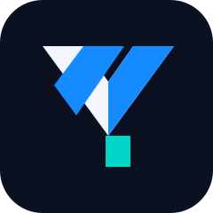

Useful over flashy
Start with real payment needs, understandable flows, and the moments where current experiences fall short.

YMCPAYMENTS INFRASTRUCTUREWe’re exploring Layer 2 infrastructure for more useful digital payments—and a token designed to serve payments and a wider ecosystem. Built around the people who make things work: builders.
YMC is in pre-build. The underlying chain, technical design, token economics, and launch timeline have not been finalized. This page describes intent, not a live service.
The technology should follow a clear use case. We’re researching the architecture, economics, and developer experience before making product promises.
Start with real payment needs, understandable flows, and the moments where current experiences fall short.
Make clear documentation, integration paths, and technical transparency foundational—not an afterthought.
Explore token utility around payments and ecosystem participation, with incentives and risks examined honestly.
Clear thinking.
Useful technology.
Honest progress.
We believe credible infrastructure starts with making the hard decisions visible. That means explaining trade-offs, documenting assumptions, and being open about what remains unknown.
YMC’s current direction is a payments-focused Layer 2 on existing blockchain infrastructure. The specific chain, rollup design, bridge model, token standard, and security assumptions are still open research questions.
We’ll share details as they become validated. Until then, the work is to ask better questions—not to pretend the answers are already built.
Explore the working docsA clear line between current direction and future delivery.
Payments focus, builder audience, intended Layer 2 architecture, and wider token utility.
Underlying chain, rollup framework, settlement, bridge, sequencer, and security design.
Token standard, utility, supply, allocation, governance, and incentive design.
No live network, token contract, bridge, staking service, or payment product is being claimed.
Project notes and decisions will live in the open as the technical and brand direction develops.